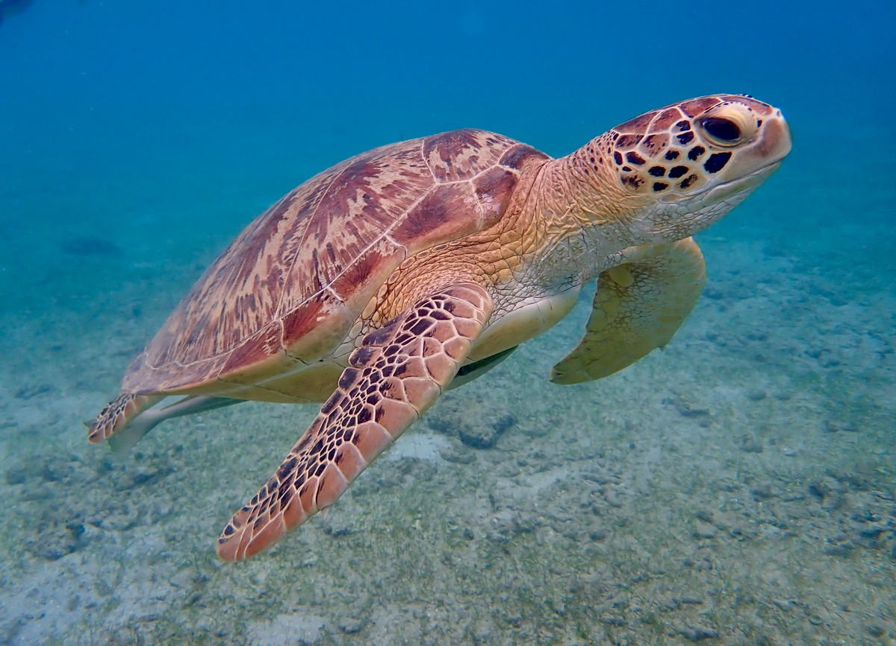

Animais extintos voltam às florestas de Florianópolis
Desmatamento cai 75% no Pantanal
Antártida: camada de gelo cresce pela primeira vez em décadas

Boas notícias sobre preservação de tartarugas marinhas
Energia limpa bate recorde e abastece 40% da eletricidade mundial
Cientistas criam plástico reciclável que não leva materiais derivados de petróleo
Periquito-cara-suja volta à Caatinga após 114 anos: ameaçado de extinção
Desmatamento na Amazônia cai quase 30% em relação ao ano anterior